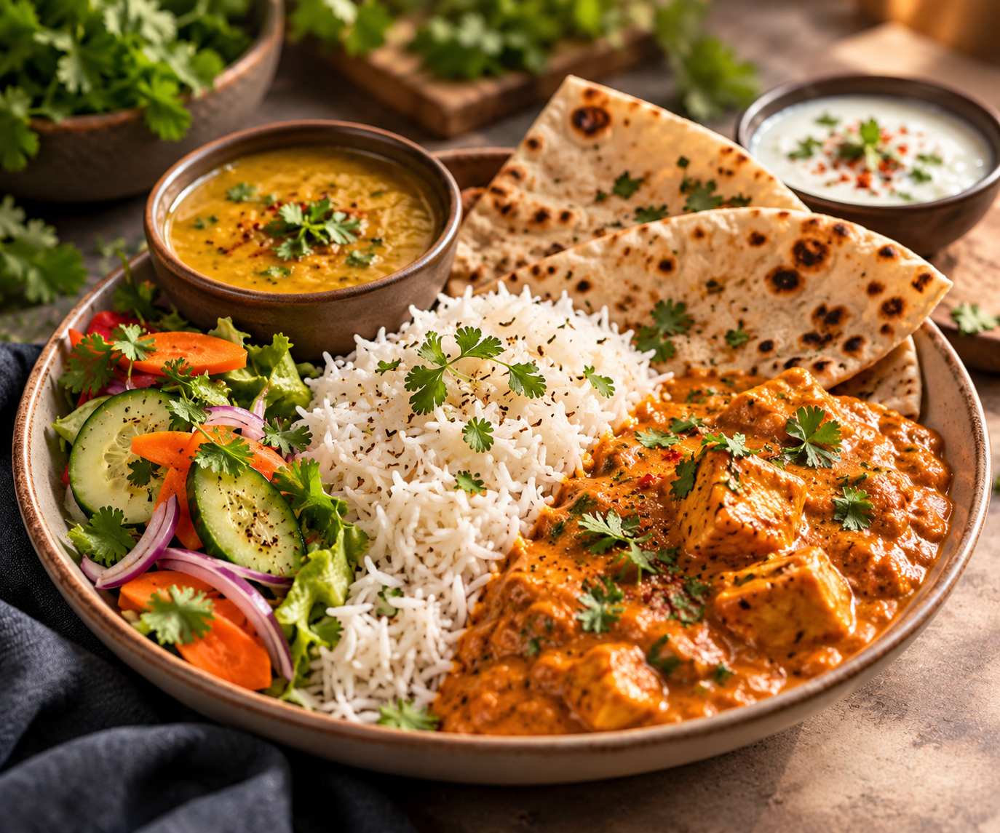

Food For Good is a digital platform that connects food providers with NGOs to make surplus food available for people who need it.
Our goal is simple: reduce food wastage by improving the way surplus food is discovered, requested, handed over and tracked.

A structured bridge between available food
and communities in need.
THE PROBLEM
Restaurants, hotels, event organizers and office canteens can have edible surplus food that is still suitable for consumption.
However, connecting that food with an NGO at the right time can be difficult when the process depends on manual calls, messages and unorganized coordination.
Food can remain unused after events, meals or business operations.
Providers and NGOs may not have a structured way to connect.
Request, handover and distribution information can be difficult to track.
OUR SOLUTION
Food For Good provides a structured digital platform where food providers can list surplus food and NGOs can discover and request suitable donations.
Lists available surplus food with quantity, location and availability details.
Organizes listings, requests, handover and distribution records.
Finds suitable food, submits a request and coordinates pickup.
HOW IT WORKS
The provider adds food name, quantity, location and freshness or expiry details.
NGOs browse available food and request donations that match their requirements.
The food provider reviews the request and confirms the donation.
The NGO arranges pickup using its own volunteers or delivery partners.
The NGO updates the distribution status so the donation journey can be recorded.
WHO USES THE PLATFORM?
Restaurants, hotels, event organizers, offices and other organizations with surplus food.
NGOs discover available donations, request suitable food and coordinate its pickup and distribution.
The administrator manages users, monitors platform activity and generates reports.
READY TO MAKE AN IMPACT?
Explore the Food For Good platform and experience how food donation can become more structured, transparent and trackable.
Continue to Platform →